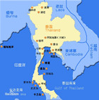

泰国市场
- 泰国国旗
- 泰国国徽
- 泰国标志性建筑
- 泰国地理位置
泰国概况
泰国是东南亚的一个国家
人口概况
全国共有30多个民族, 泰族为主要民族, 占人口总数的40%, 其余为老挝族, 华族, 马来族, 高棉族, 和苗、瑶、桂、汶、克伦、掸、塞芒、沙盖等山地民族。泰语为国语。94%的居民信仰佛教, 马来族信奉伊斯兰教, 还有少数信奉基督教、天主教、印度教和锡克教。华人是泰国的一个重要族群, 约有7,300,000(2003年)人, 占总人口的12%.主要信仰汉传佛教、道教、儒教。
泰国经济
实行自由经济政策。属外向型经济, 较依赖美、日、欧等外部市场。20世纪80年代, 制造业尤其是电子工业发展迅速, 经济持续高速增长。1996年被列为中等收入国家。1997年金融危机后陷入衰退。1999年经济开始复苏。
外交关系
奉行独立自主的外交政策和全方位的外交方针, 以东盟为依托, 在保持与美国传统盟友关系的同时, 注重发展同中国、日本和印度的关系, 维持大国平衡。
经贸往来
对外贸易在国民经济中具有重要地位。2006年对外贸易额2542亿美元, 其中出口1282亿美元, 进口1260亿美元, 分别增长17.4%和7%。美国、欧盟、日本、东盟等是泰国重要贸易伙伴。